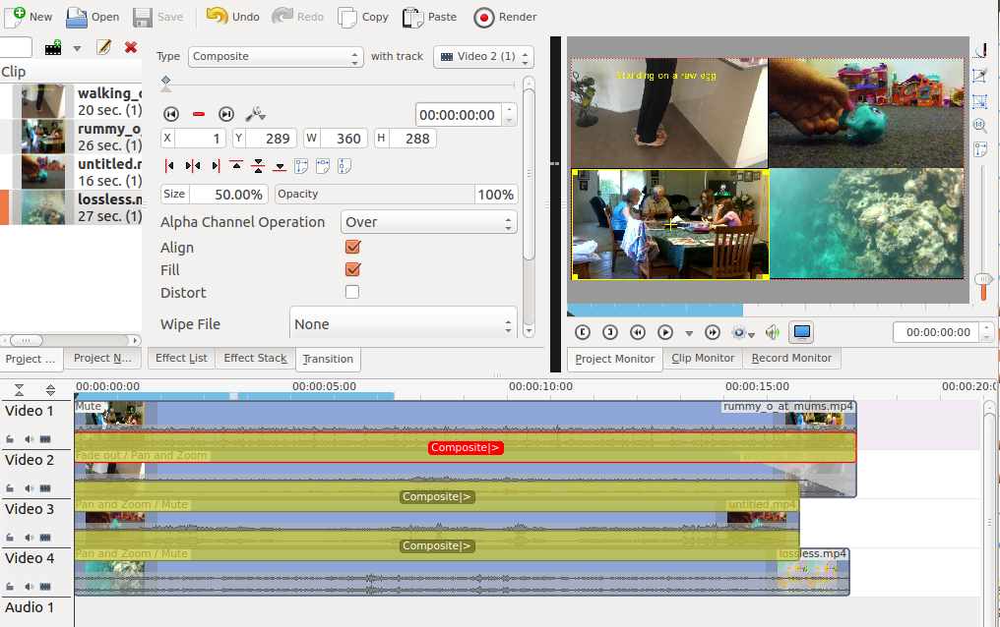
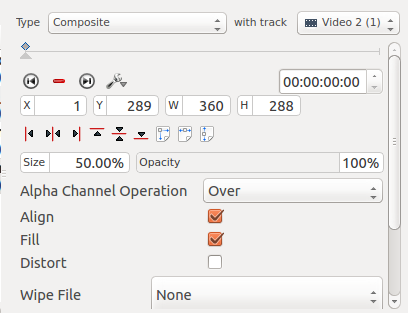
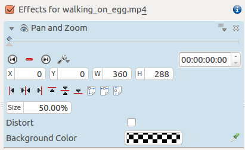
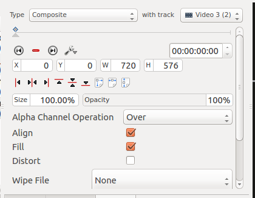
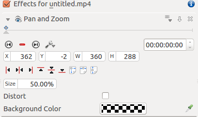
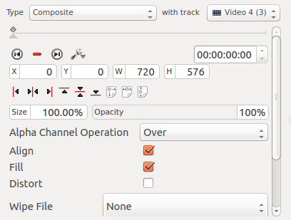
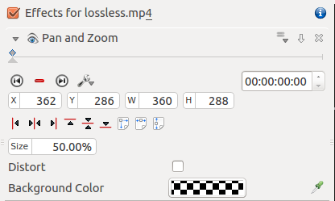

How To Do Split Screen Effect¶
Contents
This effect is also known as picture in picture effect or PIP.
In this example we will see how to have 4 screens playing at once in the video.
Example - 4 screens in one(YouTube)
To create this effect you need 4 video tracks on the time line. Add extra tracks to the time line from the Tracks menu.
You create a project/timeline like that shown in Figure 1 and described in detail below.
{kind=link}
Video 1 (appears in bottom left in the result) has no effects added to it.
{kind=link}
Video 2 (appears top left in result) has a Position and Zoom effect added to it (See Figure 3). This effect has a sizing and positioning effect as part of it that causes the Video on Video Track 2 to be scaled down 50% and be positioned in the top left corner.
{kind=link}
There is a standard composite transition between Video track 2 and Video track 3 - see Figure 4.
{kind=link}
Video 3 (appears top right in result) has a pan and zoom effect added to it (See Figure 5). This effect has a sizing and positioning effect as part of it that causes the Video on Video Track 3 to be scaled down 50% and be positioned in the top right corner.
{kind=link}
There is a standard composite transition between Video track 3 and Video track 4 - see Figure 6.
{kind=link}
Video 4 (appears bottom right in result) has a pan and zoom effect added to it (See Figure 7). This effect has a sizing and positioning effect as part of it that causes the Video on Video Track 4 to be scaled down 50% and be positioned in the bottom right corner.
{kind=link}